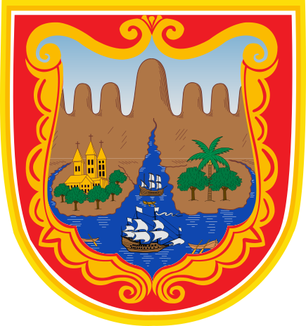

Monitoreo ambiental ciudadano
Consulta datos de calidad del aire, ruido, agua, flora y fauna recolectados por la red de estaciones del Distrito, y participa en su cuidado.
Conectando a datos en vivo…
Red de monitoreo · datos en vivo
Estación oficial de DAGMA y observatorios comunitarios tipo Davis, con mediciones en vivo de calidad del aire y clima obtenidas por API REST — no son valores simulados.
Sistema de iconos unificado
Un solo estilo, un solo fondo, un solo peso de trazo para las seis categorías ambientales — así el color deja de ser ruido visual y el ícono se lee igual de rápido en cualquier tamaño.
Pasa el cursor (o toca, en móvil) sobre un ícono para ver qué mide el Observatorio en esa categoría. Haz clic para dejarla fija.
Enlaces institucionales
Estos elementos son logotipos de proyectos, no categorías de datos — por eso ahora tienen un tratamiento visual distinto al de los iconos ambientales.